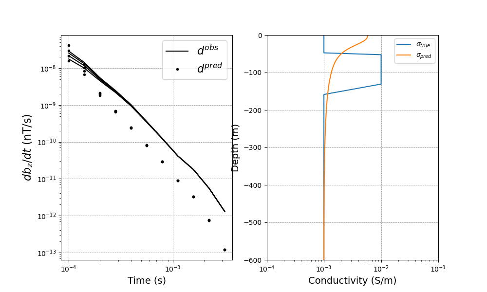

Note
Go to the end to download the full example code.
EM: TDEM: 1D: Inversion with VTEM waveform#
Here we will create and run a TDEM 1D inversion, with VTEM waveform of which initial condition is zero, but have some on- and off-time.
Running inversion with SimPEG v0.22.0
simpeg.InvProblem will set Regularization.reference_model to m0.
simpeg.InvProblem will set Regularization.reference_model to m0.
simpeg.InvProblem will set Regularization.reference_model to m0.
simpeg.InvProblem is setting bfgsH0 to the inverse of the eval2Deriv.
***Done using same Solver, and solver_opts as the Simulation3DMagneticFluxDensity problem***
model has any nan: 0
============================ Inexact Gauss Newton ============================
# beta phi_d phi_m f |proj(x-g)-x| LS Comment
-----------------------------------------------------------------------------
x0 has any nan: 0
0 1.00e+02 3.84e+04 0.00e+00 3.84e+04 3.49e+03 0
1 1.00e+02 3.11e+04 2.43e+01 3.36e+04 2.39e+03 0
2 1.00e+02 2.36e+04 6.44e+01 3.00e+04 2.67e+03 0 Skip BFGS
3 1.00e+02 1.83e+04 9.53e+01 2.78e+04 1.88e+03 0
4 1.00e+02 1.68e+04 1.05e+02 2.74e+04 7.63e+02 0 Skip BFGS
5 1.00e+02 1.66e+04 1.07e+02 2.73e+04 2.76e+02 0 Skip BFGS
------------------------- STOP! -------------------------
1 : |fc-fOld| = 6.4193e+01 <= tolF*(1+|f0|) = 3.8439e+03
1 : |xc-x_last| = 1.5739e-01 <= tolX*(1+|x0|) = 3.6894e+00
0 : |proj(x-g)-x| = 2.7619e+02 <= tolG = 1.0000e-01
0 : |proj(x-g)-x| = 2.7619e+02 <= 1e3*eps = 1.0000e-02
1 : maxIter = 5 <= iter = 5
------------------------- DONE! -------------------------
import numpy as np
import discretize
from simpeg import (
maps,
data_misfit,
regularization,
optimization,
inverse_problem,
inversion,
directives,
utils,
)
from simpeg.electromagnetics import time_domain as TDEM, utils as EMutils
import matplotlib.pyplot as plt
from scipy.interpolate import interp1d
try:
from pymatsolver import Pardiso as Solver
except ImportError:
from simpeg import SolverLU as Solver
def run(plotIt=True):
cs, ncx, ncz, npad = 5.0, 25, 24, 15
hx = [(cs, ncx), (cs, npad, 1.3)]
hz = [(cs, npad, -1.3), (cs, ncz), (cs, npad, 1.3)]
mesh = discretize.CylindricalMesh([hx, 1, hz], "00C")
active = mesh.cell_centers_z < 0.0
layer = (mesh.cell_centers_z < -50.0) & (mesh.cell_centers_z >= -150.0)
actMap = maps.InjectActiveCells(mesh, active, np.log(1e-8), nC=mesh.shape_cells[2])
mapping = maps.ExpMap(mesh) * maps.SurjectVertical1D(mesh) * actMap
sig_half = 1e-3
sig_air = 1e-8
sig_layer = 1e-2
sigma = np.ones(mesh.shape_cells[2]) * sig_air
sigma[active] = sig_half
sigma[layer] = sig_layer
mtrue = np.log(sigma[active])
x = np.r_[30, 50, 70, 90]
rxloc = np.c_[x, x * 0.0, np.zeros_like(x)]
prb = TDEM.Simulation3DMagneticFluxDensity(mesh, sigmaMap=mapping, solver=Solver)
prb.time_steps = [
(1e-3, 5),
(1e-4, 5),
(5e-5, 10),
(5e-5, 5),
(1e-4, 10),
(5e-4, 10),
]
# Use VTEM waveform
out = EMutils.VTEMFun(prb.times, 0.00595, 0.006, 100)
# Forming function handle for waveform using 1D linear interpolation
wavefun = interp1d(prb.times, out)
t0 = 0.006
waveform = TDEM.Src.RawWaveform(off_time=t0, waveform_function=wavefun)
rx = TDEM.Rx.PointMagneticFluxTimeDerivative(
rxloc, np.logspace(-4, -2.5, 11) + t0, "z"
)
src = TDEM.Src.CircularLoop(
[rx], waveform=waveform, location=np.array([0.0, 0.0, 0.0]), radius=10.0
)
survey = TDEM.Survey([src])
prb.survey = survey
# create observed data
data = prb.make_synthetic_data(mtrue, relative_error=0.02, noise_floor=1e-11)
dmisfit = data_misfit.L2DataMisfit(simulation=prb, data=data)
regMesh = discretize.TensorMesh([mesh.h[2][mapping.maps[-1].indActive]])
reg = regularization.WeightedLeastSquares(regMesh)
opt = optimization.InexactGaussNewton(maxIter=5, LSshorten=0.5)
invProb = inverse_problem.BaseInvProblem(dmisfit, reg, opt)
target = directives.TargetMisfit()
# Create an inversion object
beta = directives.BetaSchedule(coolingFactor=1.0, coolingRate=2.0)
invProb.beta = 1e2
inv = inversion.BaseInversion(invProb, directiveList=[beta, target])
m0 = np.log(np.ones(mtrue.size) * sig_half)
prb.counter = opt.counter = utils.Counter()
opt.remember("xc")
mopt = inv.run(m0)
if plotIt:
fig, ax = plt.subplots(1, 2, figsize=(10, 6))
Dobs = data.dobs.reshape((len(rx.times), len(x)))
Dpred = invProb.dpred.reshape((len(rx.times), len(x)))
for i in range(len(x)):
ax[0].loglog(rx.times - t0, -Dobs[:, i].flatten(), "k")
ax[0].loglog(rx.times - t0, -Dpred[:, i].flatten(), "k.")
if i == 0:
ax[0].legend(("$d^{obs}$", "$d^{pred}$"), fontsize=16)
ax[0].set_xlabel("Time (s)", fontsize=14)
ax[0].set_ylabel("$db_z / dt$ (nT/s)", fontsize=16)
ax[0].set_xlabel("Time (s)", fontsize=14)
ax[0].grid(color="k", alpha=0.5, linestyle="dashed", linewidth=0.5)
plt.semilogx(sigma[active], mesh.cell_centers_z[active])
plt.semilogx(np.exp(mopt), mesh.cell_centers_z[active])
ax[1].set_ylim(-600, 0)
ax[1].set_xlim(1e-4, 1e-1)
ax[1].set_xlabel("Conductivity (S/m)", fontsize=14)
ax[1].set_ylabel("Depth (m)", fontsize=14)
ax[1].grid(color="k", alpha=0.5, linestyle="dashed", linewidth=0.5)
plt.legend([r"$\sigma_{true}$", r"$\sigma_{pred}$"])
if __name__ == "__main__":
run()
plt.show()
Total running time of the script: (0 minutes 36.508 seconds)
Estimated memory usage: 9 MB